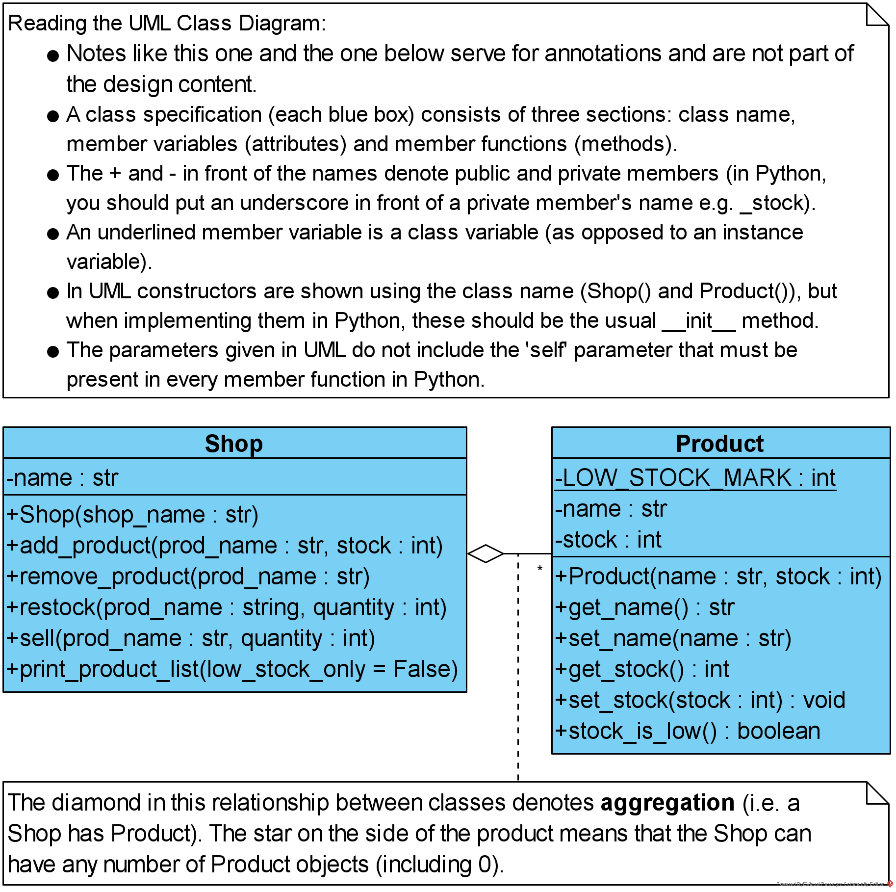

In this exercise you will be implementing a shop management application using classes.
-

- The application should consist of classes Product and Shop and a main program. Each class and the main program should be in a separate file (three files in total).
- The requirements for classes Shop and Product are shown in the UML class diagram. Study the diagram, then read the further instructions.
- The Product class should have:
- private instance member variables for the product name and stock count (string and integer respectively)
- a private class member variable called LOW_STOCK_MARK (all capitals indicating that this should stay constant) set to 3
- methods:
- a constructor, with parameters corresponding to the two member variables
- methods for getting and setting the stock and name values (4 methods in total); as these are private (e.g. productObject._stock is not allowed because _stock is a private member), we provide the methods for the variables to be read and modified from the outside without direct access
- a method that checks if the stock is low, by comparing it with the low stock mark
- The class Shop should have:
- a private instance member variable of type list that holds products (in the UML diagram, this is not shown by an attribute but as the aggregation relationship between the classes, however, it will be implemented as a member variable)
- a private instance member variable for the name of the shop
- methods:
- a constructor, with a parameter for the shop name
- add_product(self, name, stock), which creates and adds a product to the shop
- remove_product(self, name), which removes the product with name name
- restock(self, name, quantity), which increases the stock of product with name by quantity
- sell(self, name, quantity), which decreases the stock of product with name by quantity
- print_product_list(self, low_stock_only), which prints the entire product list if low_stock_only == False and the list of products low on stock if low_stock_only == True; the default value for low_stock_only should be False
- The file main.py should contain code for testing all the functionality of the Product and Shop classes.